Assignment #1 - Get system access
- Purpose
- Allow students to gain access to all systems for the classwork:
- GitHub
- Educational package
- Personal web page
- Instructions
-
These instructions should be followed by each student IMMEDIATELY after joining the class.
- Go to GitHub.com and signup for an account.
- You will be asked to pick a username. Note that this name will appear in your website. Pick something that you would want to email to a future employer who might judge you base on the web address alone.
- IF YOU WANT TO HAVE PERMANENT ACCESS TO YOUR GITHUB ACCOUNT use your permanent email
- IF YOU ARE ONLY TAKING THIS COURSE AS AN ELECTIVE use your Rappahannock.edu email
- You may consider keeping the repository permanently as a place to post web pages, resumes, etc.
- Go to your email and confirm your GitHub account.
- Apply for GitHub's Student Benefits. The Student Developer Pack offers you a number of useful tools and tutorials that may be useful during the class.
- Supply your Rappahannock.edu email.
- Give them a picture of your student ID.
- Get this done ASAP as it may take up to 9 days to get your account.
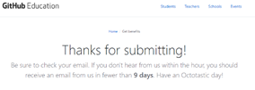
- Create a project for your coursework. There are multiple ways to do this.
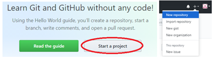
- Give the project a reasonable name. This too will appear in the sight name so pick it carefully.
- Make the repository public so I can read your code submissions. I will not be able to change your code, but I will read it.
- Check the box to create a readme file.
- Create the repository by clicking the green button.
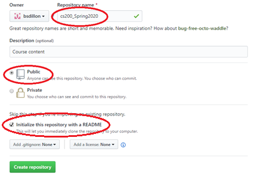
- From your repository page, click on the settings icon. Scroll down to GitHub Pages and update the Source to point to your master branch. This will allow you to create a web page that can be seen by anyone on the web.
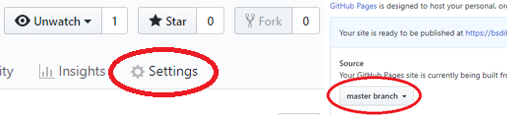
- From your new project repository, you can download the desktop application that will let your push/pull code from the repository. Install the application. If your computer is 32-bit you will get an error message during install. I recommend downloading GitKraken which will work with GitHub.
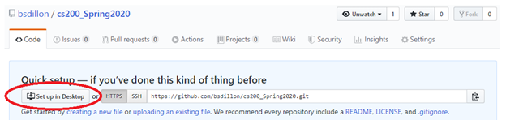
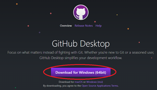
- There are several actions that you will need to master with your git application and the GitHub repository. You will be responsible for knowing how to do this with your computer. If you have any problems, you can contact me and we will work through the process. You might also work with your peers as they are trying to understand the same processes.
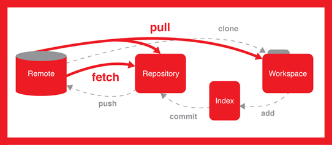
- Clone a repository. Your desktop app will link into GitHub and offer to “clone” a repository. This means a folder will be created on your computer and all the code in the online repository will be copied to that location. Test if you can clone your remote (online) repository to your computer.
- Pull the repository. You can use “pull” operations to update the repository folder in your computer. Anything added by a partner or by yourself from another computer will be automatically downloaded to that folder. A pull will make sure your folder is up to date. Test if you can pull from the repository. I suggest you edit the readme file online and then pull the change down.
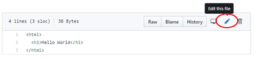
- Add to the repository. If you create a new file in the folder you have the option to add it to the local repository. Adding the file to the local copy of the repository does NOT mean it will appear online. Test if you can create a file to the folder on your computer and then add it to the local repository.
- Commit to the repository. Commit is an action that makes a change part of the repository. If you change a line in a file, it exists as a change, but doesn’t show up in the local repository until you commit. Test if you can commit the new file to the local repository.
- Push to the remote repository. After you are satisfied with what you have created locally, you can push it to the remote repository. Once you have done this, the change is visible to everyone else and may be pulled to another local repository. Test if you can push the new file to the remote repository.
- You can define the structure of your website by adding folders to the repository. This can be done locally or online.
- To do it locally, create the folder, put a file in that folder, add, commit, and push that file. The folder will be created automatically. This is the standard HTML index file that you will need to create.
- To do it online, click the button to create a file. Write the name of the folder followed by a /. The screen will automatically be changed to show the folder in the file name. You must add a new file to create the folder in the repository.
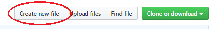
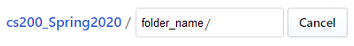
- The default file should be index.html. While you can add real content to this page, you should ALWAYS put this file in each folder. Failing to do so will let a hacker read all the content in your folder article. If you add a folder, make sure you put an index.html file in place. Create one in the main folder as well.
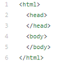
- The GitHub page you have created will be named in this way. Navigate to the page in your browser. This confirms that your page is online.
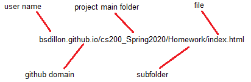
- Now that you can access the system, create a 'hello world' page. This is the traditional first code created by all developers. Test to make sure the buttons work and resolve any bugs.
<html>
<head>
</head>
<body>
<p>Hello world!</p>
</body>
</html>
- Submit the link to the page in Canvas.